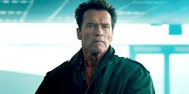
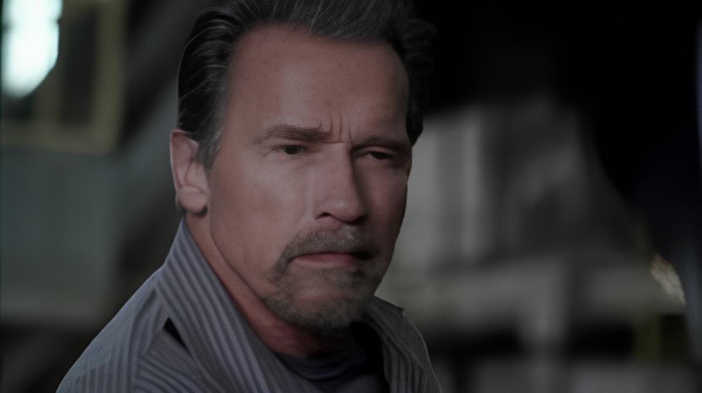
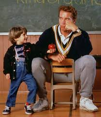
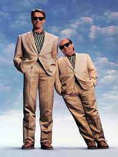
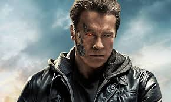

Arnold Schwarzenegger participou dos três primeiros filmes da franquia Os Mercenários, interpretando o personagem Trench Mauser, mas não está em "Os Mercenários 4". Ele explicou que a ausência se deu por não querer mais participar, considerando suas aparições anteriores como "favor" para Sylvester Stallone, e que "para ele acabou".

Arnold participa do filme Rota de Fuga e interpreta Ray Breslin que é a maior autoridade que existe quando se trata de segurança. Após analisar diversas prisões de segurança máxima, ele desenvolve um modelo à prova de fugas. No entanto, Ray acaba sendo preso, mas é enviado justamente para a prisão que ele mesmo criou. Lá, ele precisa encontrar uma brecha não imaginada até então, que possa permitir sua fuga.

Um Tira no Jardim de infância, interpretado por Arnold. Os detetives John Kimble e Phoebe O'Hara perseguem Cullen Crisp, um conhecido traficante de drogas. John descobre que Cullen está atrás de sua ex-esposa e do filho deles, acreditando que ela tenha três milhões de dólares provenientes da venda de drogas. Então, John e Phoebe vão até Astoria, Oregon, onde acreditam que o filho de Cullen esteja estudando. O detetive passa a dar aulas no jardim de infância para crianças de seis anos, tentando descobrir qual das mães pode ser a ex-esposa de Cullen.

Gêmeos após resultados de uma experiência genética, os gêmeos fraternos Julius e Vincent são separados ao nascer. Mary Ann, a mãe, acha que eles estão mortos. Agora, Vincent é um vendedor de rua sem escrúpulos em Los Angeles. Julius, criado por um cientista, cresce humilde, inteligente e forte, mas muito ingênuo sobre o mundo. Quando Julius fica sabendo sobre sua mãe e irmão, ele vai para Los Angeles para encontrar sua família.

Disfarçado de humano, o assassino conhecido como O Exterminador do Futuro viaja de 2029 a 1984 para matar Sarah Connor. Enviado para proteger Sarah está Kyle Reese, que divulga a chegada do Skynet, um sistema de inteligência artificial que detonará um holocausto nuclear. Sarah é o alvo porque a Skynet sabe que seu futuro filho comandará a luta contra eles. Com o implacável Exterminador os perseguindo, Sarah e Kyle tentam sobreviver.